개념 16개 가운데 16개를 실험 페이지로 만들었어요. 순서대로 보면 단원의 흐름이 이어져요.
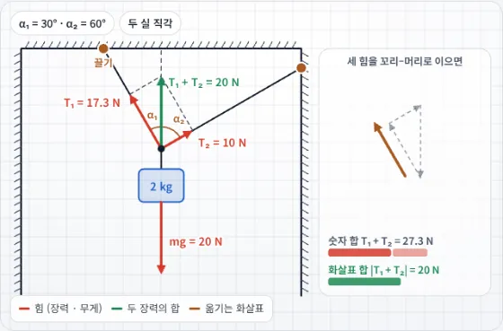
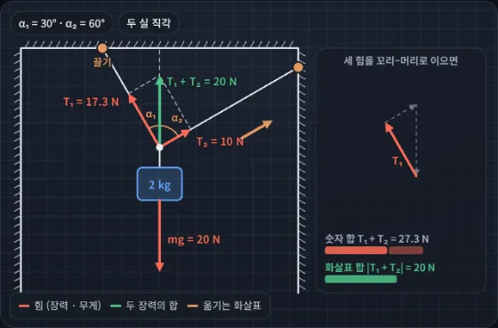
A1-01 스칼라·벡터와 힘의 합성·분해 왜 힘은 숫자처럼 더하지 않고 화살표를 이어 붙여 더할까?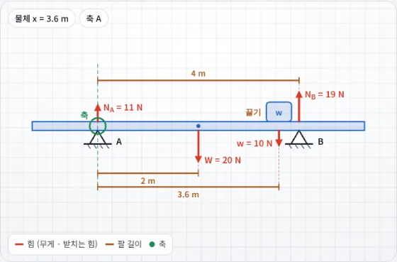
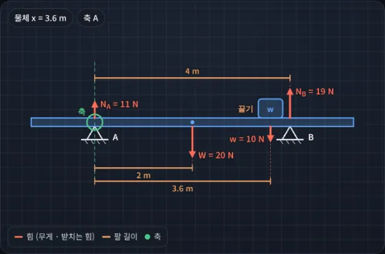
A1-02 돌림힘과 강체의 평형 같은 힘인데 왜 손잡이 끝을 밀 때 문이 더 잘 열릴까?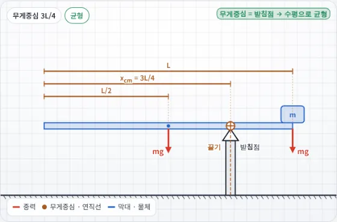
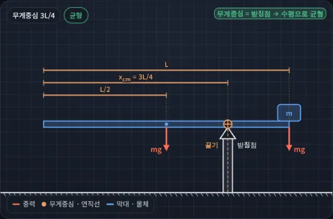
A1-03 무게중심과 구조물의 안정성 왜 낮고 넓은 물체는 잘 쓰러지지 않을까?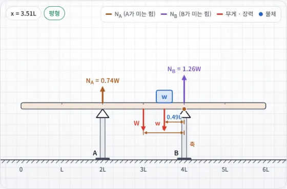
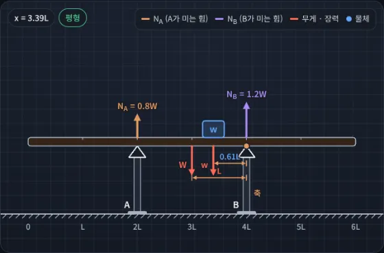
A1-04 한계 조건과 연결된 강체 '넘어지지 않는 최대 위치'는 왜 한쪽 받침점의 힘이 0인 순간일까?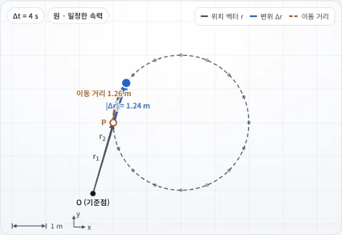
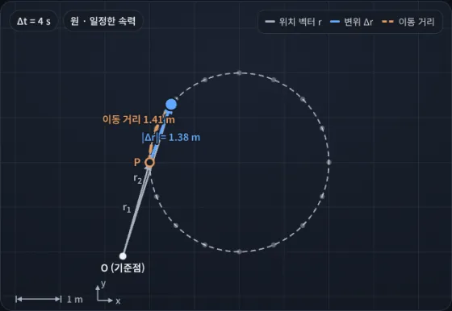
A1-05 위치·변위·속도·가속도 벡터 가속도의 방향은 속도의 방향과 무슨 관계일까? — 아무 관계가 없다.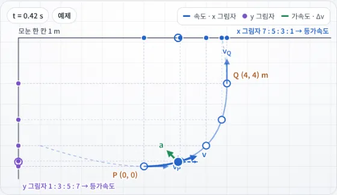
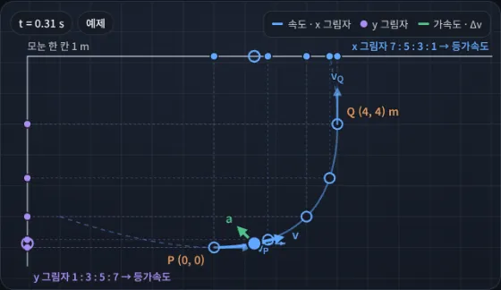
A1-06 평면 위 등가속도 운동 가속도가 일정하면 왜 경로가 포물선이 될까?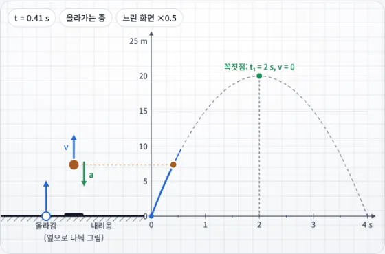
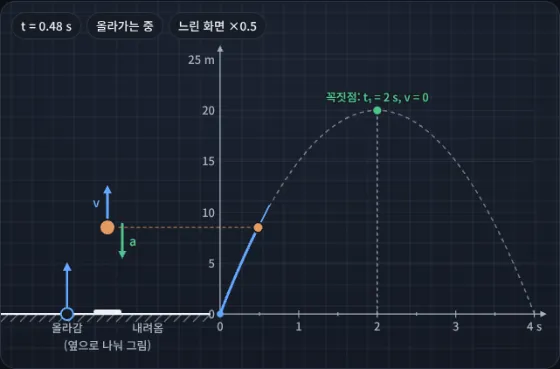
A1-07 중력장에서의 직선 운동 위로 던진 공은 왜 올라간 시간만큼 걸려 내려올까?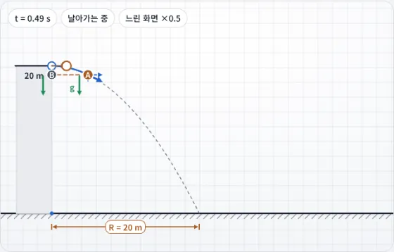
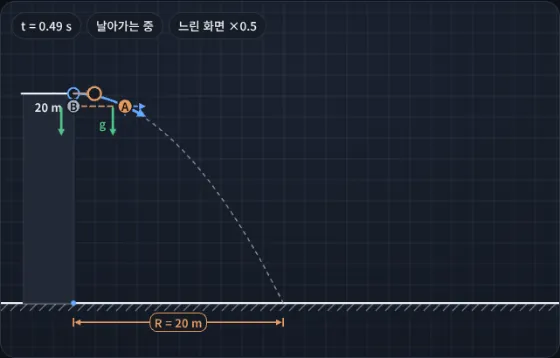
A1-08 포물선 운동 던지는 속력이 달라도 왜 수평으로 던진 공과 떨어뜨린 공은 동시에 떨어질까?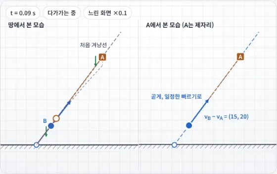
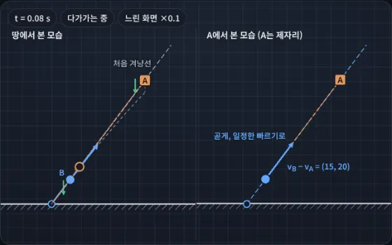
A1-09 상대 운동과 빗면 좌표계 — 만남 문제의 도구 같은 중력을 받는 두 물체를 서로에게서 보면 왜 등속 직선 운동일까?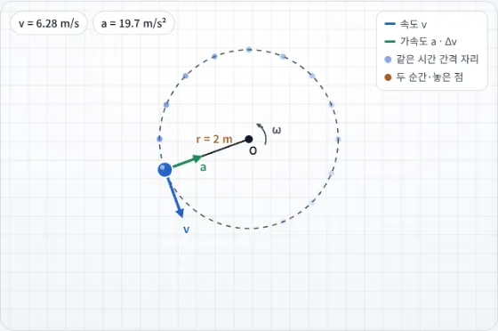
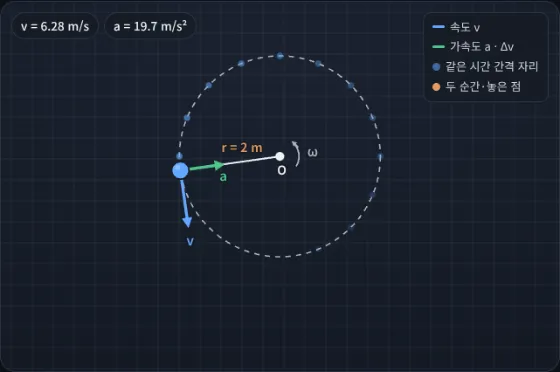
A1-10 등속 원운동의 기술: 주기·각속도·구심 가속도 속력이 일정한데 왜 가속도가 있을까, 그리고 그 방향은 왜 중심일까?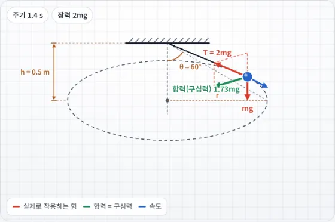
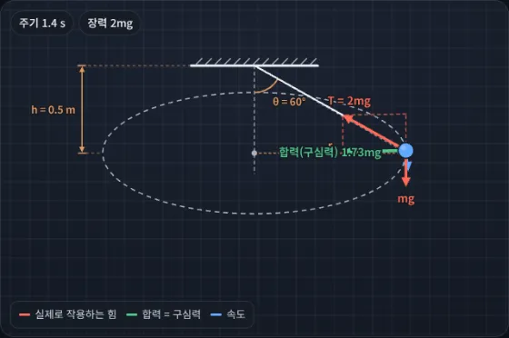
A1-11 여러 가지 구심력 구심력은 어떤 종류의 힘일까? — 새로운 힘이 아니라 '중심 방향 합력'의 이름이다.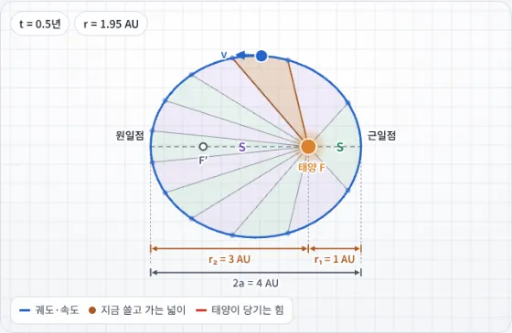
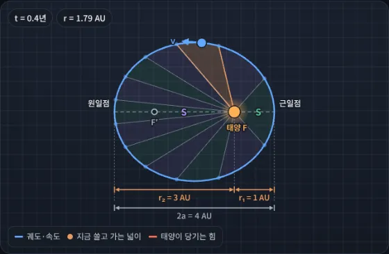
A1-12 케플러 법칙 행성은 왜 태양 가까이에서 빨라지고, 먼 행성일수록 왜 한 바퀴가 길까?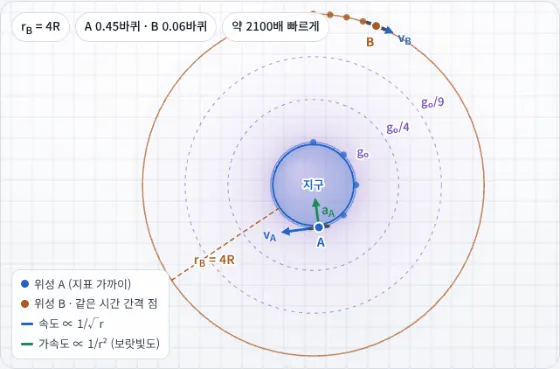
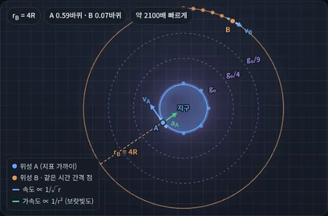
A1-13 만유인력·중력 가속도·인공위성·탈출 속력 위성은 왜 떨어지지 않고, 얼마나 빨라야 지구를 영영 떠날 수 있을까?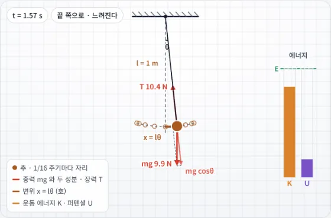
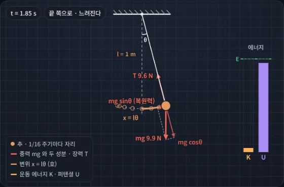
A1-14 단진동과 단진자 진자의 주기는 왜 추의 질량과 진폭에 상관없을까?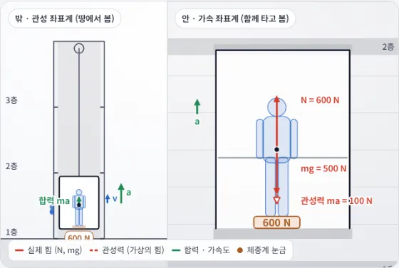
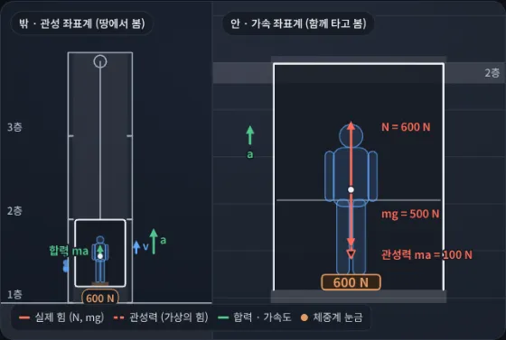
A1-15 가속 좌표계와 관성력 급출발하는 버스에서 몸이 뒤로 쏠리는 '힘'은 누가 주는 걸까?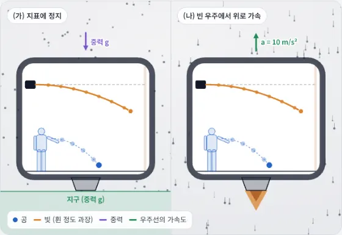
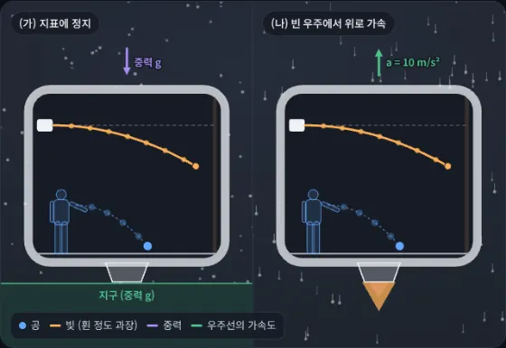
A1-16 등가 원리·일반 상대성 이론·블랙홀 가속하는 우주선 안에서 느끼는 '무게'와 진짜 중력은 구별할 수 있을까?